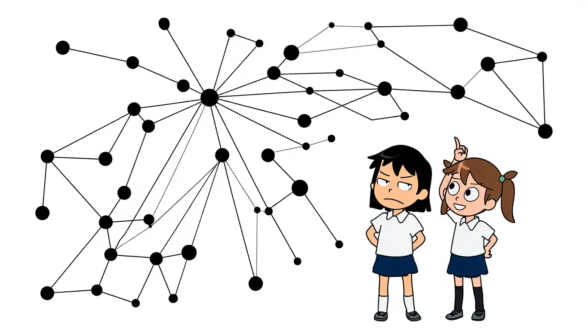
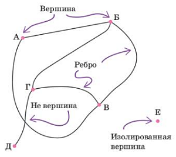
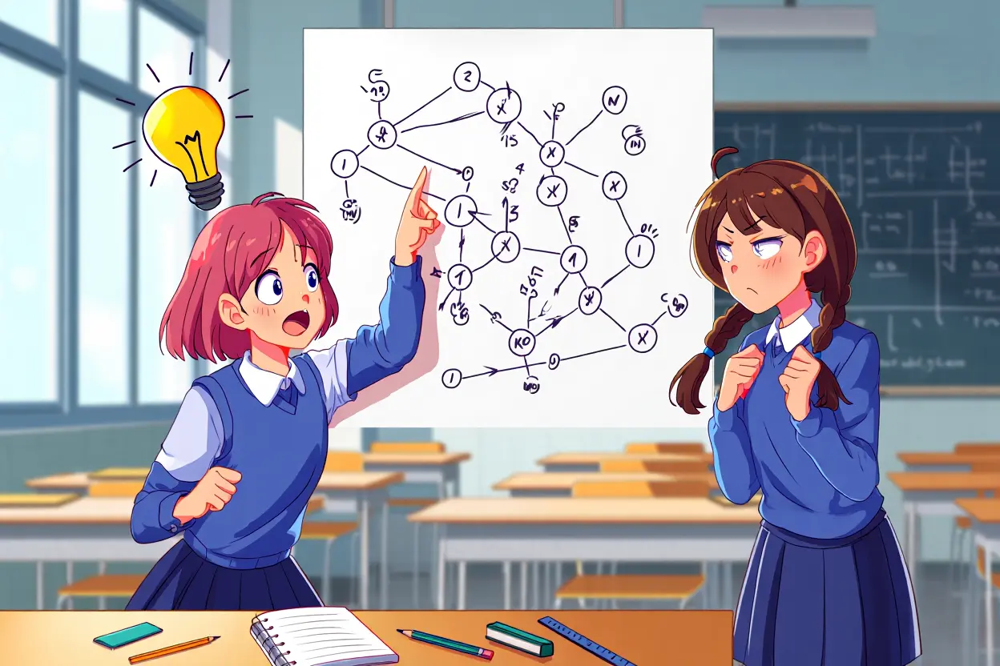

Содержание:
- Главная страница
- Что такое граф?
- Что такое граф? - проверь себя
- Вершины и рёбра графа
- Вершины и рёбра графа - проверь себя
- Изоморфизм графов
- Изоморфизм графов - проверь себя
- Превращаем карту в граф
- Превращаем карту в граф - проверь себя
- Решаем задачи с графами
- Решаем задачи с графами - проверь себя
- Список литературы
Вершины и рёбра графа

| Точки в графе называются вершинами графа. Некоторые (не обязательно все) вершины соединены линиями. Эти линии называются рёбрами графа. |
|
Если вершина является концом ребра, говорят, что ребро исходит из этой вершины, или что оно входит в неё. Вершина не обязательно должна быть соединена ребрами с другими вершинами. Вершину, из которой не выходит ни одно ребро, называют изолированной. Каждая вершина в графеГрафИзображение объектов и связей между ними с помощью точек и линий. должна быть явно отмечена. На этом рисунке видно, что рёбра могут пересекаться, но точка пересечения не является вершиной графа. Это как две нитки: одна пересекает другую, но узелка в точке пересечения нет. |
 |
